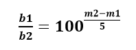
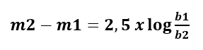
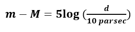

MAGNETUDE DA ESTRELA
A magnitude aparente (m) de uma estrela é uma medida do seu brilho aparente. A primeira escala para a medição de magnitudes aparentes foi introduzida por Hiparco no século II a.C.. Nesta escala as estrelas mais brilhantes tinham m = 1 e as menos brilhantes m = 6. Em termos de brilho aparente resulta que uma estrela de magnitude 1 é cerca de 100 vezes mais brilhante que uma estrela de magnitude 6. Assim podemos escrever

onde b1 e b2 são os brilhos aparentes de duas estrelas e m1 e m2 as respetivas magnitudes aparentes. Podemos assim dar uma car´acter cont´ınuo `a escala de Hiparco e alargar esta, em ambos os sentidos, por forma a poder incluir objetos mais e menos luminosos (ver Figura 3). A rela¸c˜ao entre magnitudes aparentes e brilhos aparentes de duas estrelas (ou outros dois objectos celestes) é dada por

A magnitude absoluta, que é uma medida do brilho intrínseco de uma estrela, também pode ser representada no eixo vertical do Diagrama HR. Diferente da luminosidade, que mede a energia total emitida, a magnitude absoluta mede o brilho que uma estrela teria se estivesse a uma distância padrão de 10 parsecs da Terra. Conhecidas as magnitude absolutas de duas estrelas, podemos comparar suas luminosidades. Isso porque a magnitude absoluta é proporcional ao logaritmo da luminosidade, a relação entre magnitude aparente e magnitude absoluta é dada por

onde d é a distância expressa em pc, diferença m−M designa-se usualmente por módulo de distância
Esta escala permite uma comparação direta entre o brilho das estrelas, independentemente de sua distância real da Terra, tornando o diagrama uma ferramenta mais robusta para comparar diferentes estrelas (Hertzsprung, 2020).